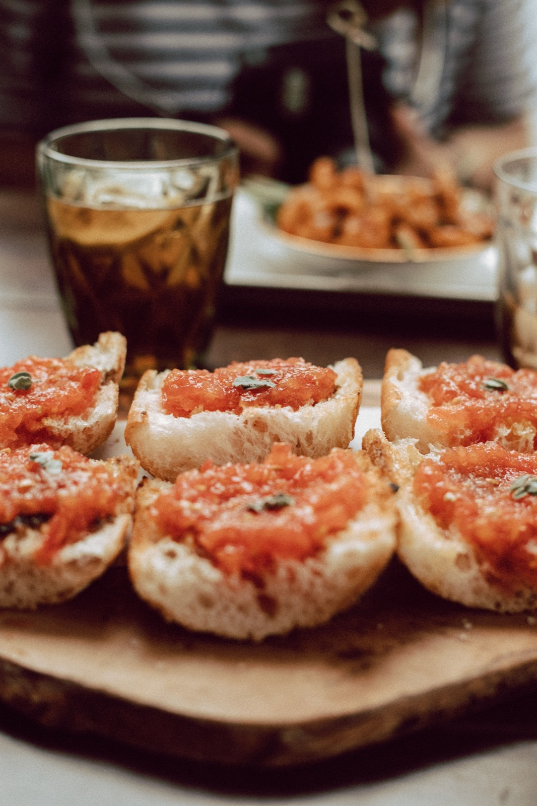
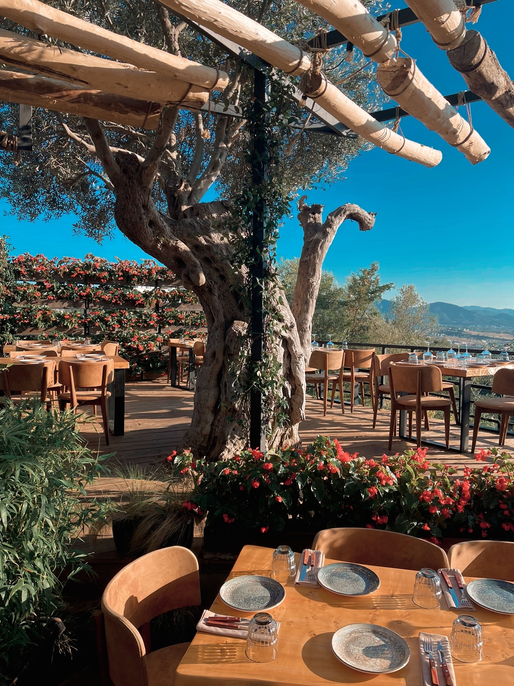

Un recorrido directo
La navegación enlaza con las secciones principales y conserva el acceso a la acción de reserva.
CASO DE ESTUDIO DISEÑO WEB
El proceso detrás de la landing de un restaurante catalán ficticio: una identidad cálida, una experiencia clara y una reserva de demostración.
RECORRER EL PROYECTOPROYECTO CONCEPTUAL · RESTAURANTE Y DATOS FICTICIOS
01 EL PUNTO DE PARTIDA
La Taula es el concepto de un restaurante de cocina catalana en Barcelona. El reto era crear una página que transmitiera cercanía y tradición, y que permitiera encontrar rápidamente la carta, la historia y la información de contacto.
La web es una pieza de portfolio, no un servicio real. Por eso las reseñas, la dirección y el horario se presentan como ejemplos, y el formulario simula la interacción sin enviar ni almacenar datos.
02 EL SISTEMA VISUAL
Los tonos crema y tierra evocan una mesa acogedora; el burdeos aporta contraste a las acciones y el dorado destaca detalles. Cormorant Garamond da carácter a los titulares, mientras Inter mantiene la lectura cómoda en textos y controles.
Cormorant Garamond
Inter · clara y funcional
03 LA EXPERIENCIA
La página reúne en un recorrido sencillo lo que alguien necesita para conocer el concepto: platos, historia, opiniones de ejemplo y datos de contacto.


La navegación enlaza con las secciones principales y conserva el acceso a la acción de reserva.
El formulario valida los campos y muestra una confirmación local; no solicita ni guarda reservas reales.
La cuadrícula de Bootstrap y los estilos propios reorganizan el contenido para pantallas pequeñas.
04 DETALLES DE IMPLEMENTACIÓN
El restaurante, los testimonios, el mapa y los datos de contacto son ficticios. El formulario solo muestra una simulación en el navegador.
EL RESULTADO
Una landing responsive que combina una dirección visual cálida con información clara y una interacción de demostración.
Ver la landing